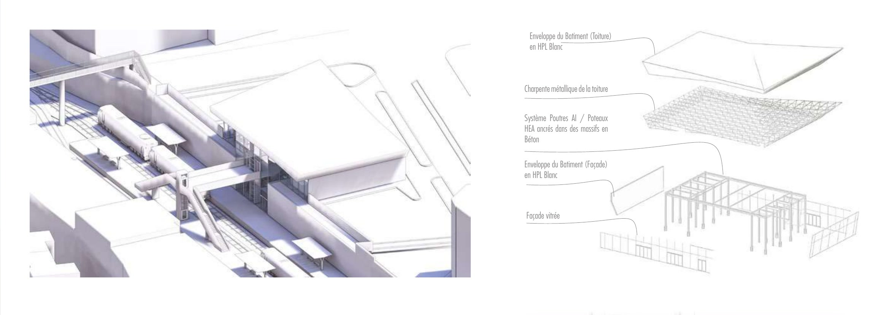
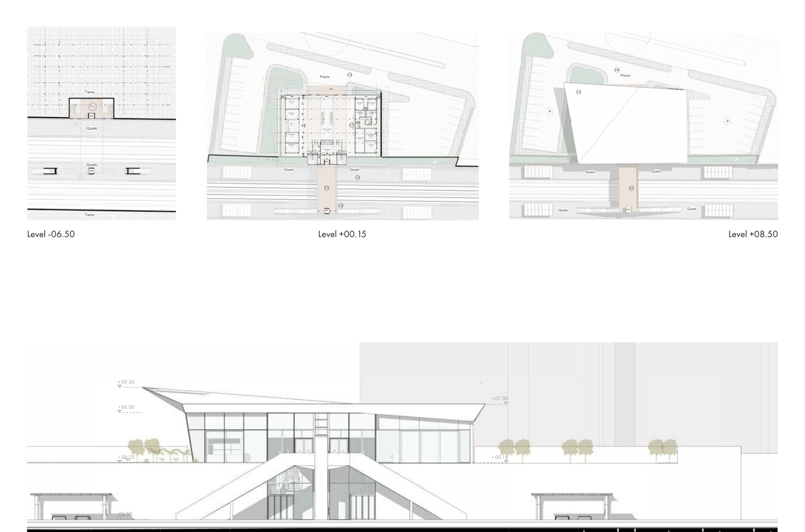
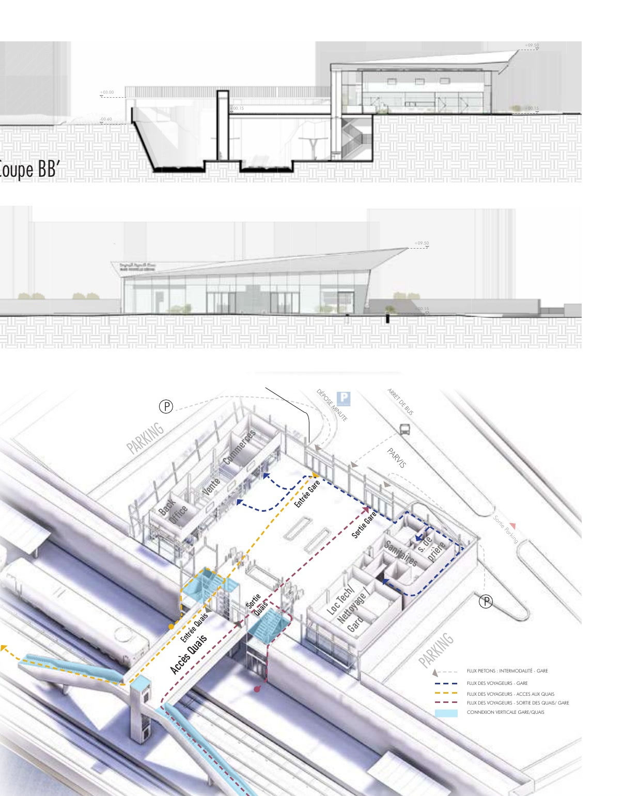

Nouvelle Medina Station | Casablanca
The architectural concept rests on a contemporary interpretation of origami, where the roof becomes a structuring element, both functional and expressive. Composed of dynamic folds, it generates a volume in tension that seems to unfold towards the public space, expressing the notion of movement inherent to travel.
Nouvelle Medina Station
- Location
- Casablanca, Nouvelle Medina district
- Year
- March 2025
- Type
- Urban Train Station | Heritage-informed connector
- Area
- 500 m²
La nouvelle gare Nouvelle Medina / Plans, facades and sections / Scale 1:200
Project
This play of facets allows a subtle modulation of natural light through the interior spaces, while optimising rainwater runoff and solar protection. The glazed facade, in dialogue with this sculptural roof, ensures transparency and lightness, reinforcing the porosity between the city and the platforms. This architectural composition, both fluid and assertive, gives the station a strong identity, where structure and aesthetics merge in a dynamic balance.
Drawings and images
Massing and structure
Fig. 1

Plans and long elevation
Fig. 2

Sections and passenger flows
Fig. 3